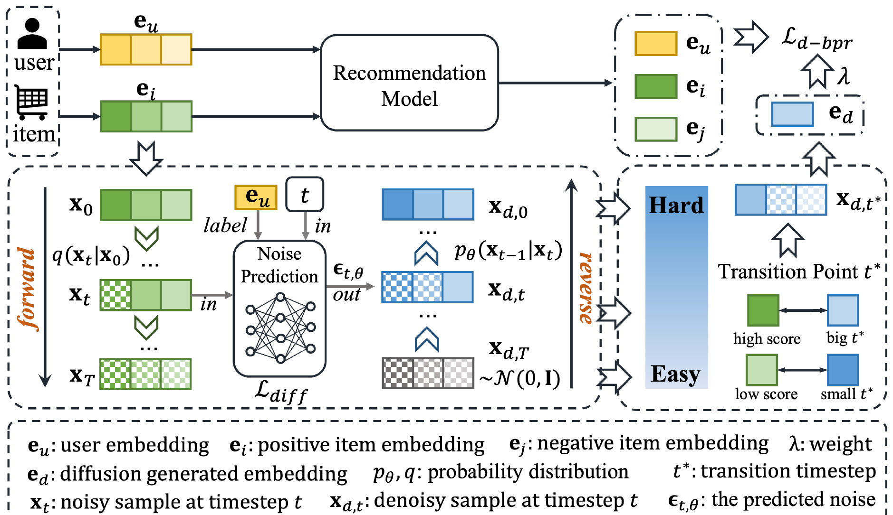

目录 · 9 节
1负采样到底难在哪？2整体流程：从正样本出发，生成一个“变味”的版本3为什么扩散过程能给出“难度可控”的负样本？4转折点怎么定？5实验：弱模型上提升大，强模型上提升小6自适应转折点到底帮了多少？7我认为它的局限8一个推荐团队可以怎么试9一句话结论推荐模型只看得到用户点过什么，负样本只能从没点过的物品里抽。抽得太随便，模型学不到东西；专挑模型打分高的“难负样本”，又容易把用户其实会喜欢、只是没刷到的物品当成负例。哈工大等单位在 AAAI 2026 的这篇论文换了个思路：不从物品库里抽，而是用扩散模型生成一个“介于喜欢和不喜欢之间”的向量当负样本。合成出来的向量不对应任何真实物品，也就不会冤枉用户真正想要的东西。接在 NGCF（图协同过滤模型）、GRU4Rec 这类较弱的模型上，Recall@10 提升 18% 到 69%；接在 MixGCF、AHNS（自适应难度负采样）这类本身已经做了难负样本挖掘的模型上，只提升 1% 到 5%。
思路值得记住，具体方法不必照搬。“生成负样本而不是抽负样本”确实绕开了假负例问题，而且作为插件不用改原模型。但论文自己的变体实验说明，随机选一个扩散步数就能拿到大部分收益，标题里的“自适应”贡献不大；实验也只在几个小型公开数据集上做，强基线上的提升很有限。做召回或排序负采样的团队可以拿它的核心想法做一个便宜的验证，而不是直接上整套扩散。
负采样到底难在哪？
用一个美妆电商的例子说明（示意）。某用户最近买了一支豆沙色口红，训练时这条记录是正样本，需要配一个负样本：
| 负样本来源（示意） | 例子 | 问题 |
|---|---|---|
| 随机抽 | 一桶汽车机油 | 太容易区分，模型学不到东西 |
| 难负样本挖掘 | 另一支同色系口红 | 用户可能也喜欢，只是没看到，成了假负例 |
| 合成负样本 | 一个“像口红但又不太像”的向量 | 不对应真实物品，没有冤枉谁 |
随机负采样是最常见的做法，但大部分随机抽到的物品和用户兴趣八竿子打不着，模型很快就能把它们分开，之后这些样本就不再提供有用的信号。于是有了难负样本挖掘：从没交互过的物品里专挑模型打分高的，迫使模型学更细的边界。MixGCF、AHNS 都属于这一类。难负样本的毛病是：打分高的未交互物品里，有不少本来就是用户会喜欢的，只是曝光不够没机会点。把它们当负例训练，等于教模型“用户不喜欢自己会喜欢的东西”。
论文提出的方法叫 ADAR（自适应扩散增强）。它的出发点是：与其在真实物品里找“难度合适”的负样本，不如直接合成一个难度可控的向量。
整体流程：从正样本出发，生成一个“变味”的版本

| 步骤 | 做什么 | 产出 |
|---|---|---|
| 训练扩散 | 把正样本物品向量当起点加噪，训练一个以用户向量为条件的去噪网络 | 一个会“生成这个用户可能喜欢的物品向量”的扩散模型 |
| 反向生成 | 从纯噪声出发，按用户条件一步步去噪 | 每一步一个候选向量，从“完全是噪声”到“很像正样本” |
| 选转折点 | 根据正样本当前得分算出一个步数 t* | 反向生成从第 T 步数到第 0 步，取编号为 t 的那一步的候选向量当负样本；t 越大越接近纯噪声 |
| 训练推荐模型 | 把合成负样本加到 BPR 损失的负样本一侧，和原来的负采样一起用 | 更新后的推荐模型 |
扩散模型和推荐模型交替训练。合成负样本只是加进去的“补充”，原来的负采样方法照用，所以它可以接在任何用 BPR 训练的模型上。BPR 损失本身是推荐里最常见的成对损失：让正样本得分高于负样本得分。ADAR 的改动是在负样本得分上再加一项 λ 倍的“用户和合成向量的内积”，λ 在 0 到 1 之间调。
为什么扩散过程能给出“难度可控”的负样本？
扩散的前向过程是逐步往向量里加噪声：第 0 步是干净的正样本，第 T 步是纯噪声。中间每一步，向量里还保留多少原来的信息，由一个随步数递减的系数决定。反向生成时顺序倒过来：从纯噪声开始，每一步去掉一点噪声，越往后越像一个这个用户会喜欢的物品。
所以反向过程里每一步的输出天然形成了一个难度梯度：刚开始几步几乎是噪声，很容易和正样本区分，是简单负样本；快结束时已经很像正样本，是难负样本。挑哪一步，就决定了负样本有多难。
打个比方：一张照片被逐渐打上马赛克，开头还能认出是谁，到某一刻就认不出了。ADAR 想找的就是“刚好认不出”的那一刻，那一帧的照片最适合拿来练眼力。
转折点怎么定？
论文先做了一个理论推导。假设推荐模型的打分是用户向量和物品向量的内积，那么正样本加噪到第 t 步后，期望得分会按 缩小， 是这一步还保留的信号比例。如果把“得分掉到某个负样本水平 以下”定义为转折点，就有：
是正样本原本的得分。手算一下：正样本得分 0.8，负样本水平 0.2，则 ，也就是信号只剩约 6% 时才算“变成负样本”；如果正样本得分只有 0.4，则 ，信号剩 25% 就已经认不出了。结论是：模型越确信用户喜欢这个物品，它的“身份”在加噪中保持得越久，转折点越靠后。
问题是负样本水平 在隐式反馈里观察不到。论文于是用一个经验公式代替：
是当前模型给正样本的打分， 和 默认都取 1。这个公式保留了“得分越高、转折点越靠后”的方向。代几个数进去，以序列推荐里用的 T=20 为例：
| 正样本得分 | sigmoid 后 | t*（T=20） | |
|---|---|---|---|
| −1 | 0.37 | 0.59 | 约 12 |
| 0.5 | 1.65 | 0.84 | 约 17 |
| 2 | 7.39 | 约 1.0 | 约 20 |
可以看出，因为 永远大于 0，sigmoid 的结果永远大于 0.5，所以 t* 总落在后半段，也就是偏向噪声更多、相对容易的那一侧。这意味着“自适应”调节的范围其实只有一半。
实验：弱模型上提升大，强模型上提升小
实验在四个公开数据集上做：Amazon 的 Beauty、Toys、Sport 和 Yelp，每个都是两三万用户、平均每人 8 到 9 条交互。分两类任务：协同过滤（NGCF、LightGCN、MixGCF、AHNS）和序列推荐（GRU4Rec、SASRec、CL4SRec）。指标是 Recall@10/20 和 NDCG@10/20。下表是 Beauty 上的 Recall@10（单位 %）：
| 模型 | 原始 | 加 ADAR | 相对提升 |
|---|---|---|---|
| NGCF | 6.37 | 8.13 | 27.6% |
| LightGCN | 8.69 | 8.99 | 3.5% |
| MixGCF | 9.82 | 10.01 | 1.9% |
| AHNS | 9.66 | 10.05 | 4.0% |
| GRU4Rec | 2.79 | 4.34 | 55.6% |
| SASRec | 5.99 | 6.32 | 5.5% |
| CL4SRec | 7.24 | 7.44 | 2.8% |
所有组合都有提升，论文报告配对 t 检验显著。但规律很明显：基线越弱，提升越大。NGCF 和 GRU4Rec 本身就比同类模型差一截，加上 ADAR 后提升二三十甚至五十多个百分点；MixGCF 和 AHNS 本身已经做了难负样本挖掘，再加 ADAR 只有 2% 到 4%。这说明 ADAR 提供的信号和已有的难负样本挖掘有很大重叠，真正新增的部分不多。最强的序列模型 CL4SRec 在 Yelp 上 NDCG@10 提升 13.8%，是强模型里最亮眼的一个点，说明对比学习和合成负样本之间确实有一定互补。

自适应转折点到底帮了多少？
这是读这篇论文最该看的一组实验。论文在 Beauty 上比较了几种选 t* 的方式：不加合成负样本、随机选步数、固定取 T/2、同时取 T/2、T/4、T/8、T/10 这四步的候选向量，当作四档难度不同的负样本一起训练（这一做法来自 DMNS（一种用扩散生成多档负样本的图链接预测方法）），以及 ADAR 的自适应公式。
| 选 t* 的方式 | NGCF Recall@10 | GRU4Rec Recall@10 |
|---|---|---|
| 不加合成负样本 | 6.37 | 2.79 |
| 随机选步数 | 7.81 | 4.00 |
| 固定 T/2 | 7.79 | 3.37 |
| 混合多个固定步数 | 7.91 | 3.51 |
| 自适应（ADAR） | 8.13 | 4.34 |
自适应确实最好，但随机选步数已经拿到了大部分收益：NGCF 从 6.37 到 7.81，占总提升的约 80%；GRU4Rec 从 2.79 到 4.00，也接近 80%。所以更准确的说法是：收益主要来自“加入扩散生成的负样本”这件事，按得分选步数是锦上添花。
我认为它的局限
第一，“自适应”的贡献比标题暗示的小。上面的变体实验里，随机选步数就拿到约 80% 的收益；而经验公式在默认参数下只会把 t* 放在后半段，调节范围本身就窄。理论推导依赖“打分是内积”这个线性假设，最后落地的公式也和推导结果没有直接对应关系。
第二，实验规模和基线都偏弱。四个数据集都只有两三万用户、每人不到 10 条交互，协同过滤任务还是随机划分训练测试集，没有工业数据，也没有线上实验。提升最大的 NGCF 和 GRU4Rec 本身就是较弱的基线，在 MixGCF、AHNS、CL4SRec 这类强模型上，Beauty 上的提升只有 2% 到 4%。训练开销也值得留意：每个 mini-batch 都要跑一遍完整的反向扩散（协同过滤用 50 步，序列推荐 20 步），这在大规模训练里不是小开销。
第三，λ 很敏感，需要按模型调。NGCF 最优 λ 是 0.8，GRU4Rec 是 0.3；GRU4Rec 的 λ 从 0.3 调到 0.5，Recall@10 从 4.34 掉到 3.3 左右，几乎退回到随机步数之前的水平。换一个模型或数据集，就得重新搜索。另外，合成负样本是从纯噪声出发、只以用户向量为条件生成的，并不针对某一个具体的正样本物品，所以它更像是“这个用户可能喜欢的模糊物品”，而不是“这件正样本的变味版”，这和论文的叙述有出入。
一个推荐团队可以怎么试
- 先判断负采样是不是瓶颈：看看当前用的难负样本里，有多少后来被同一用户点击或购买了。比例高，说明假负例问题真实存在，值得往下做。
- 先试最便宜的合成负样本：不训练扩散模型，直接给正样本物品向量加不同强度的高斯噪声，或者在正样本和随机负样本之间插值，作为额外负样本加进损失，权重 λ 从 0.1 起搜索。论文的变体实验提示，随机强度可能已经够用。
- 有效再考虑训练一个小的条件扩散模型，并对比“随机步数”和“按得分选步数”。如果两者差不多，就留在随机版本。
- 一定在已经做了难负样本挖掘的强基线上验证，并记录训练耗时。在弱基线上看到的大幅提升，不代表在线上模型上也能复现。
一句话结论
合成负样本能绕开假负例，这个方向值得试；但按得分自适应选扩散步数只是锦上添花，主要收益来自加入生成的负样本本身。
| 维度 | 评价 |
|---|---|
| 问题重要性 | 中高。负采样质量直接影响召回和排序，假负例问题普遍存在 |
| 方法创新性 | 中。用扩散生成负样本的思路此前在图链接预测里已有，这里迁移到推荐并加了转折点公式 |
| 实验证据 | 中低。只有小型公开数据集，在已做难负样本挖掘的基线上提升 1% 到 5%，自适应部分贡献有限 |
| 工程成本 | 中。不用改原模型，但每个 batch 要多跑一遍反向扩散，λ 需按模型调 |
| 是否值得尝试 | 可以先用加噪或插值做低成本验证；不建议直接照搬整套扩散 |
讨论
欢迎补充实验细节、复现经验或不同看法。需 GitHub 登录。
正在加载讨论…